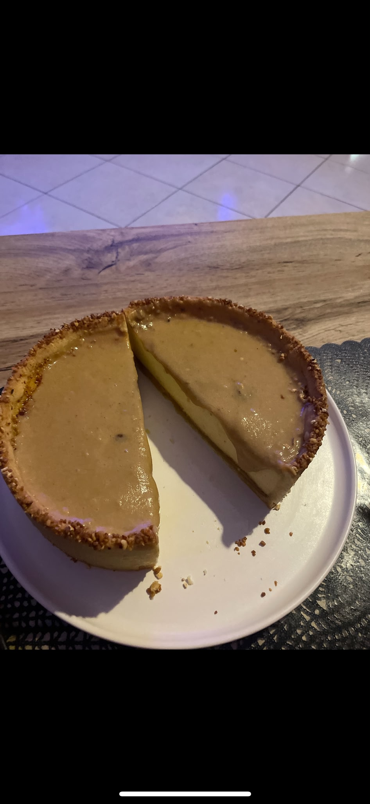
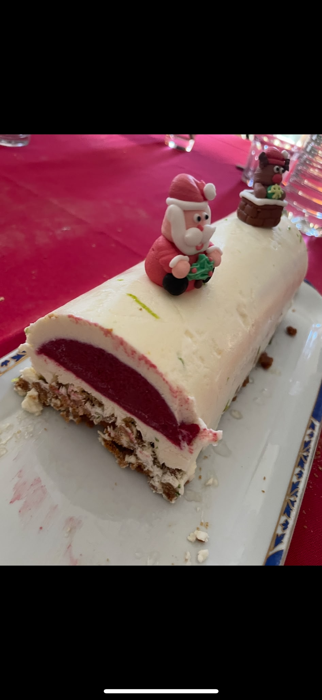
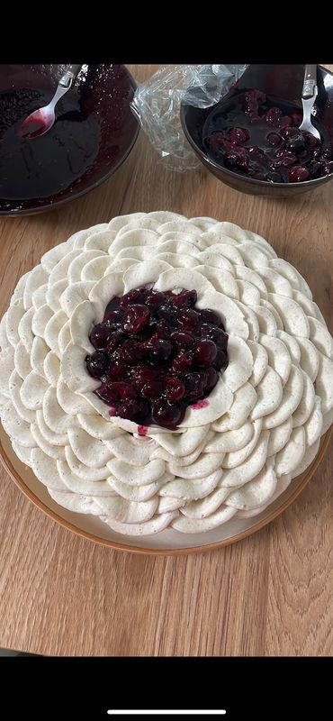
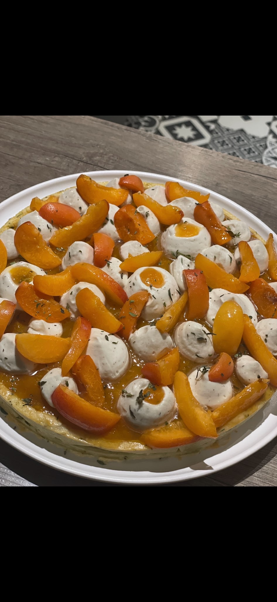
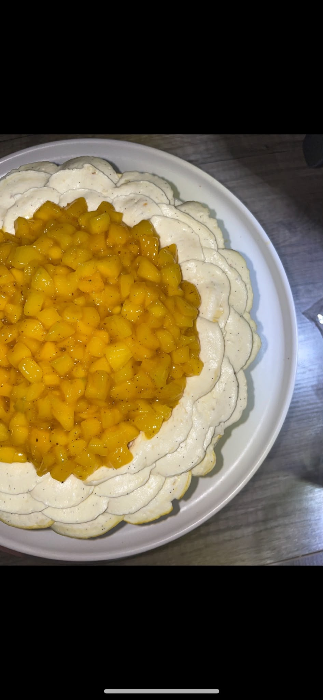
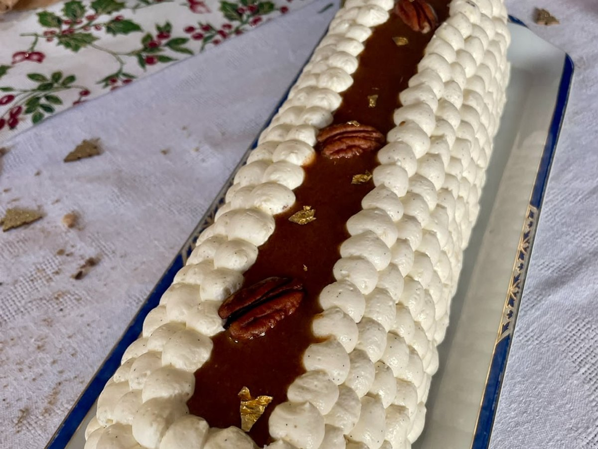
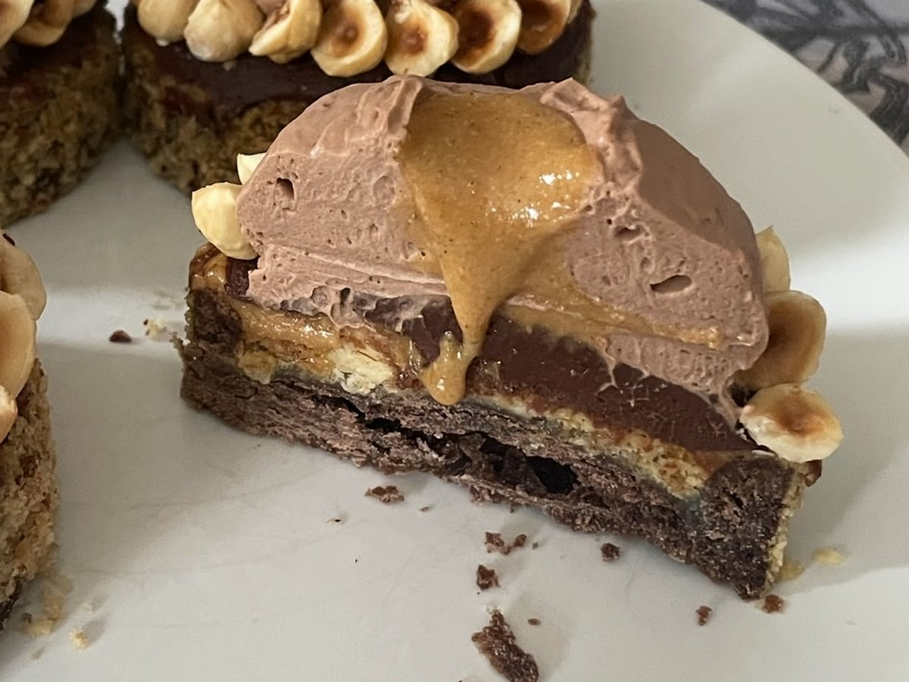
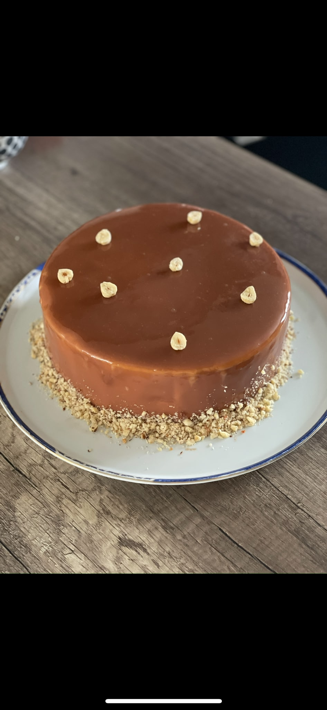
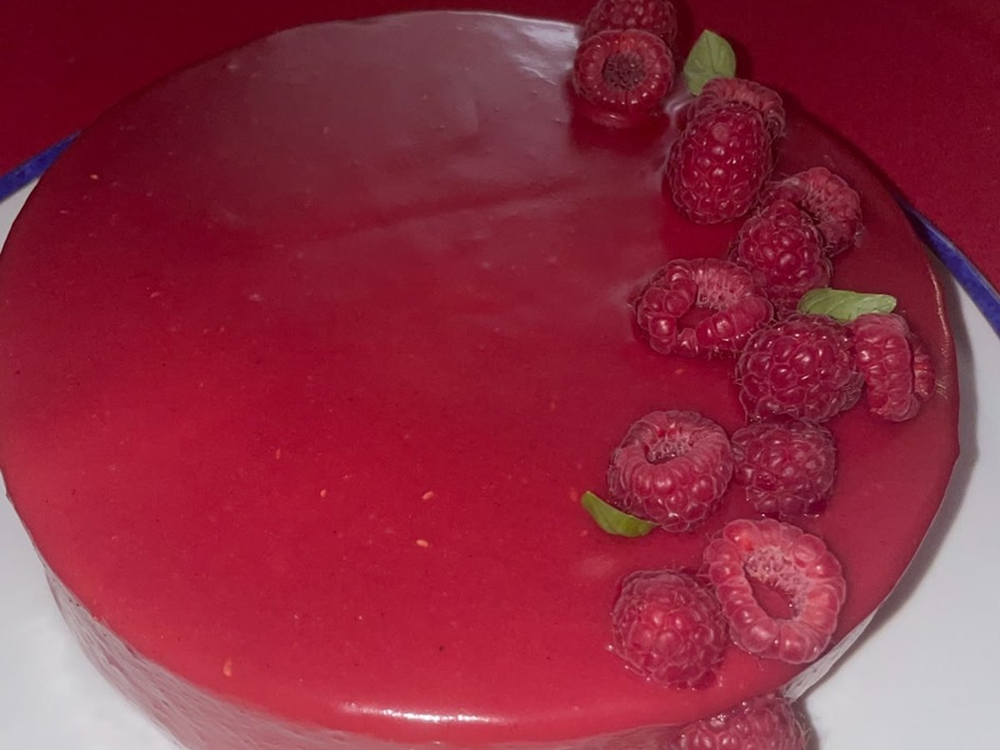

Pâtisserie
16 recettesLa Belle Pêche
La Tarte Figues Noix
La Bombe à la Fraise

Flan cacahuète

L'ensoleillée aux abricots
L'incontournable meringuée

Flan praliné
Le tiramisu Biscoff

Noël en cheesecake
L'Écarlate

L'irrésistible cacahuète

Myrtille Sauvage

Recette à venir
Abricotine Provençale

Recette à venir
L'exotique

Recette à venir
Noël en noisette

Recette à venir
Dome Cara-choco

Recette à venir
Le Choco-noisette

Recette à venir